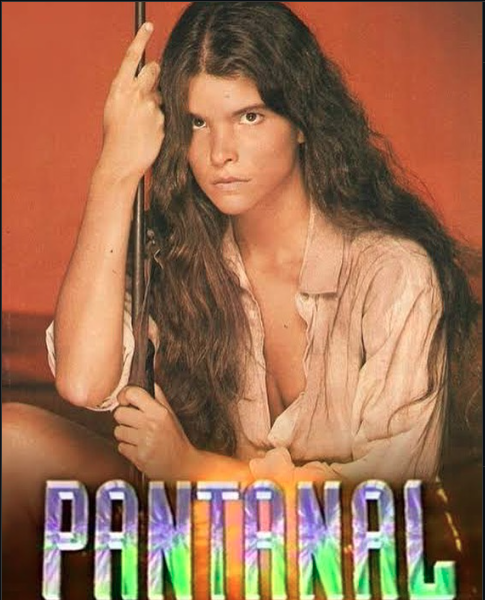
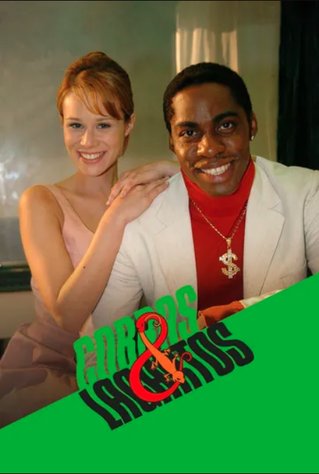
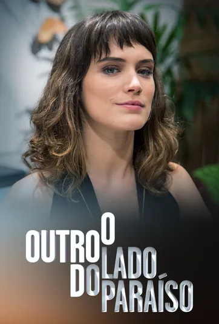
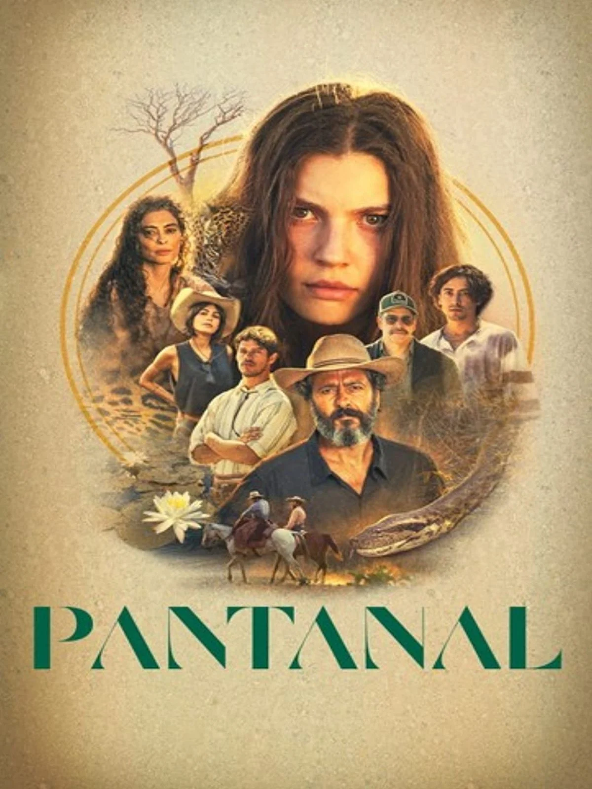
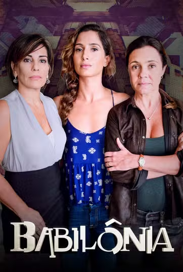
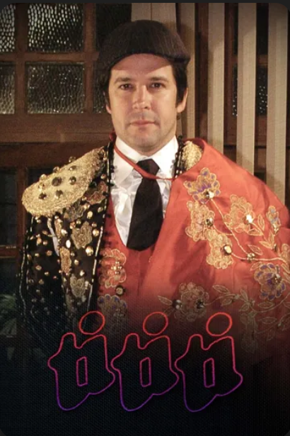

Páginas da Vida
203 cap. • 2006
✔ Assistido

RBD - REBELDE
410 cap. • 2008
✔ Assistido
Avenida Brasil
179 cap. • 2012
✔ Assistido

PANTANAL
187 cap. • 1990
✔ Assistido

QUATRO POR QUATRO
233 cap. • 1994
✔ Assistido
O CLONE
221 cap. • 2001
✔ Assistido

AMÉRICA
203 cap. • 2005
✔ Assistido

COBRAS & LAGARTOS
179 cap. • 2006
✔ Assistido

PARAÍSO TROPICAL
180 cap. • 2007
✔ Assistido
GERAÇÃO BRASIL
147 cap. • 2014
✔ Assistido
TOTALMENTE DEMAIS
175 cap. • 2015
✔ Assistido

FORÇA DO QUERER – EDIÇÃO ESPECIAL
149 cap. • 2020
✔ Assistido

O OUTRO LADO DO PARAÍSO
172 cap. • 2017
✔ Assistido
A DONA DO PEDAÇO
161 cap. • 2019
✔ Assistido
CAMINHO DAS ÍNDIAS
203 cap. • 2009
✔ Assistido

A FAVORITA
197 cap. • 2008
✔ Assistido

IMPÉRIO
203 cap. • 2014
✔ Assistido

MALHAÇÃO – TODA FORMA DE AMAR
253 cap. • 2019
✔ Assistido

VERDADES SECRETAS
64 cap. • 2015
✔ Assistido
INSENSATO CORAÇÃO
185 cap. • 2011
✔ Assistido

PANTANAL
167 cap. • 2022
✔ Assistido

I LOVE PARAISÓPOLIS
154 cap. • 2015
✔ Assistido

SALVE JORGE
179 cap. • 2012
✔ Assistido
MAR DO SERTÃO
178 cap. • 2022
✔ Assistido

BABILÔNIA
143 cap. • 2015
✔ Assistido
A VIDA DA GENTE
137 cap. • 2011
✔ Assistido

PASSIONE
209 cap. • 2010
✔ Assistido

TI TI TI
209 cap. • 2010
✔ Assistido

SALVE-SE QUEM PUDER
107 cap. • 2020
✔ Assistido

ÓRFÃOS DA TERRA
154 cap. • 2019
✔ Assistido

OS DIAS ERAM ASSIM
88 cap. • 2017
✔ Assistido

O REI DO GADO
209 cap. • 1996
✔ Assistido

SANGUE BOM
160 cap. • 2013
✔ Assistido
CORAÇÃO INDOMÁVEL
162 cap. • 2013
✔ Assistido